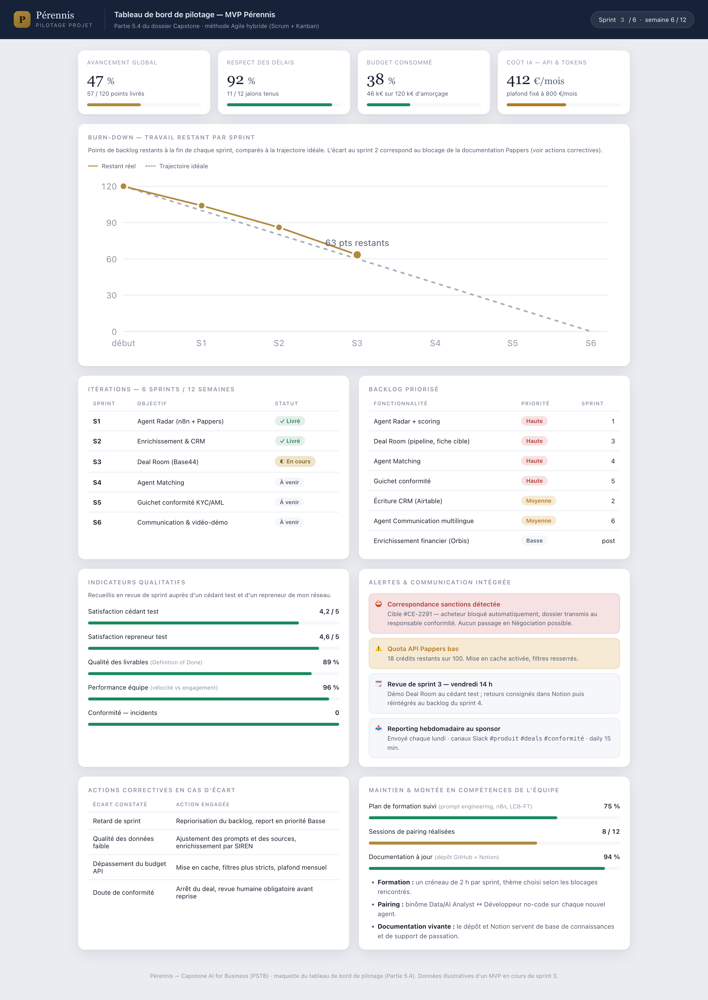
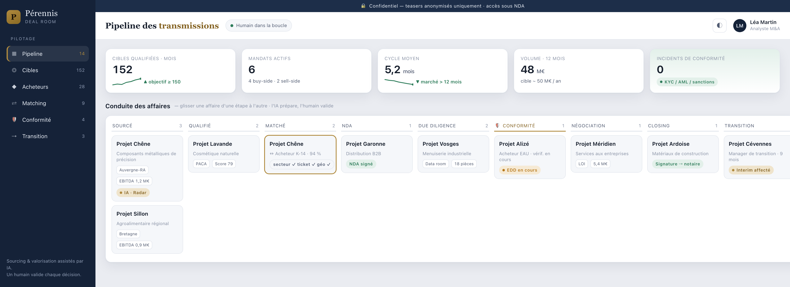
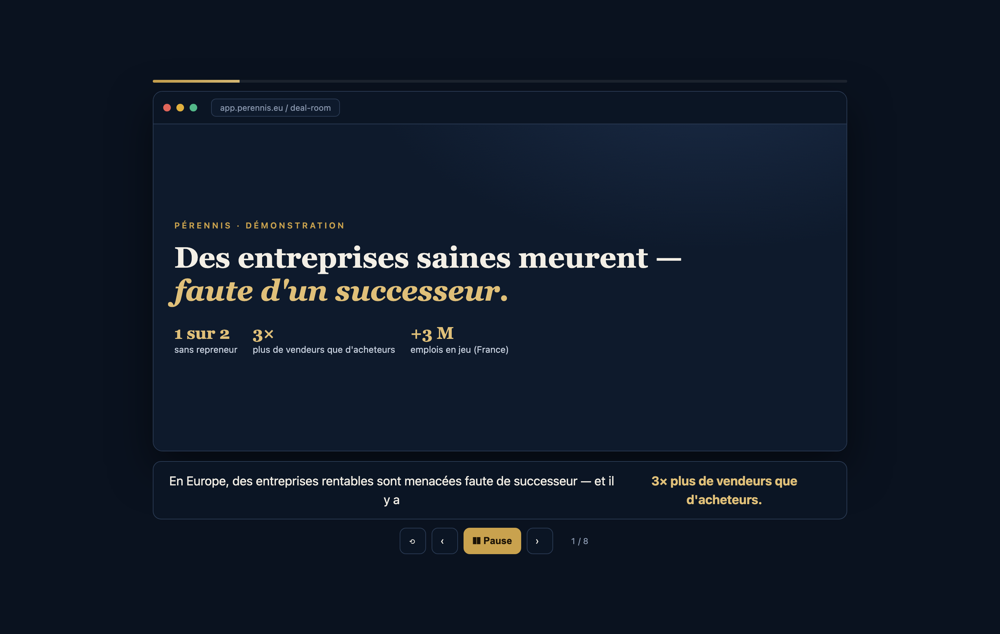
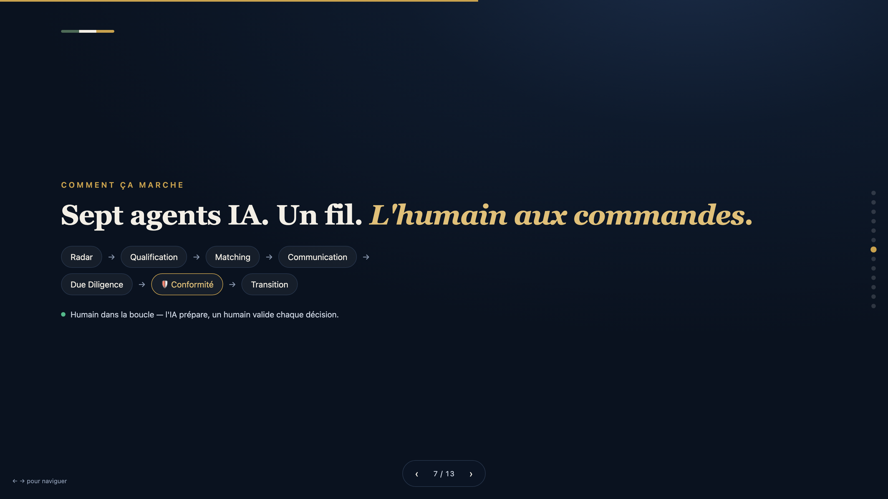
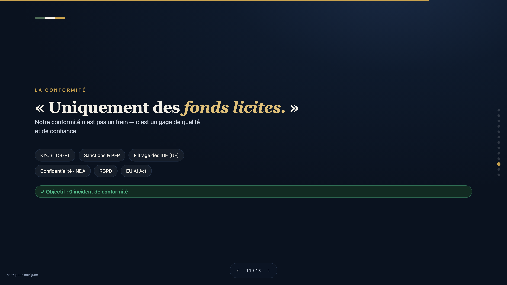

L'Europe fait face à une crise silencieuse de la transmission d'entreprises : des PME rentables disparaissent faute de successeur.
En France, ~500 000 dirigeants partiront à la retraite (+3 M d'emplois en jeu) et une entreprise sur deux ne trouve pas de repreneur. Le marché est déséquilibré : 3× plus de vendeurs que d'acheteurs — le facteur rare est l'acheteur solvable et de confiance.
Pérennis relie les deux rives : des agents d'IA détectent, valorisent et apparient les entreprises (avec un guichet de conformité et l'humain dans la boucle), et j'apporte un réseau d'acheteurs de la CEI et du Moyen-Orient (mon avantage : réseau, langue russe), plus un management de transition.
Conclusions : l'IA générative est devenue un standard du M&A ; la contrainte est désormais organisationnelle (données, conformité, confiance). Le besoin de transmission est massif et durable, mais le marché est inefficace.
| Acteur | Problème | Solution IA | Résultat | Leçon |
|---|---|---|---|---|
| Cyndx | trouver des cibles avant le marché | « Projected to Raise » (NLP + base mondiale) | ~86 % de précision | → agent Radar (sourcing prédictif) |
| Sourcescrub | sourcer des PME de fondateurs | agrégation de signaux | pipelines propriétaires | → sourcer au-delà des registres |
| Marché M&A 2025 | efficacité des deals | GenAI dans les workflows | 86 % l'ont intégrée (65 % en 1 an) | approche dé-risquée |
| Due diligence IA | DD lente, risques manqués | lecture de contrats, anomalies | DD plus rapide | → agent Due Diligence |
| RegTech KYC/AML | criblage manuel | screening sanctions & PEP | conformité à l'échelle | → agent Conformité |
Innovation (marché transfrontalier inédit adossé à l'IA) + Augmentation (l'IA démultiplie une petite équipe). Leviers : efficacité opérationnelle, scalabilité, qualité, conformité. Décisions et relations restent humaines.
Commanditaire : le comité de fondation de Pérennis (le fondateur mandatant le consultant IA). Mission : « Concevoir et prototyper une solution d'IA qui détecte les PME européennes à céder sans successeur et les met en relation, en toute conformité, avec des acheteurs vérifiés de la CEI et du Moyen-Orient. » Contraintes : budget d'amorçage, conformité stricte, confidentialité, humain dans la boucle. Livrables : prototype, business case, plan de pilotage.
Méthode retenue : Design Thinking (Empathize → Define → Ideate → Prototype → Test) combiné à l'AI Opportunity Tree vu au cours Stratégie Business & IA. Le marché étant bilatéral, l'idéation a été conduite sur les deux versants avant convergence : divergence sans censure d'abord, convergence par grille de critères ensuite, avec ancrage sur les frustrations réelles issues de mon réseau d'acheteurs.
Parcours utilisateur — côté cédant :
| Étape | Aujourd'hui | Avec Pérennis |
|---|---|---|
| Connaître la valeur | ne sait pas, estime au doigt mouillé | l'agent Valorisation fournit une fourchette argumentée |
| Trouver un repreneur | > 12 mois d'attente, 42 % d'échecs | un acheteur vérifié de la CEI / du Moyen-Orient est apporté |
| Confidentialité | risque de fuite dans l'entreprise | teaser anonymisé, accès sous NDA |
| Prix | les rares candidats négocient à la baisse | la concurrence sur un actif rare soutient le prix |
| Après la vente | il part, la continuité est fragile | le manager de transition assure la passation |
Parcours utilisateur — côté repreneur :
| Étape | Aujourd'hui | Avec Pérennis |
|---|---|---|
| Trouver une cible | marché européen inconnu | l'agent Matching sélectionne selon ses critères |
| Confiance & langue | barrière RU/AR, peur de la fraude | interlocuteur dans sa langue, « pont » culturel |
| Vérification | crainte d'être trompé | agent Due Diligence + guichet KYC/AML |
| Direction à distance | ne sait pas gérer de loin | management de transition sur la période charnière |
Idée 1 — Pérennis, plateforme hybride (IA + conseil + management de transition). Plateforme bilatérale réunissant cédants et repreneurs, agents d'IA pour le sourcing et l'appariement, accompagnement A→Z et management de transition. Outils IA : n8n (orchestration), Claude (analyse et rédaction multilingue), API Pappers/Infogreffe, OpenSanctions, Base44. Avantages : impact maximal, exploite pleinement mon fossé (réseau + langue + transition), effet plateforme, démonstration parlante. Limites : périmètre large → lancement par phases nécessaire.
Idée 2 — SaaS de sourcing sell-side (outil seul). Une IA détecte les entreprises sans successeur et revend les « leads » à d'autres conseils M&A. Outils IA : n8n + API Pappers + scoring, sans couche conseil. Avantages : simple, purement technologique, rapide à construire. Limites : n'exploite pas mon fossé, marge faible, je deviens fournisseur de leads et non auteur de la transaction.
Idée 3 — Conciergerie buy-side (mandats pour acheteurs de l'Est). Je prends le brief d'un acheteur de la CEI / du Moyen-Orient et cherche la cible sur mesure. Outils IA : agent Radar pour le sourcing sur critères, Claude pour les mémos. Avantages : exploite mon fossé, forte valeur par client, mise en œuvre rapide. Limites : ne passe pas à l'échelle sans base sell-side, dépend du flux d'acheteurs, effet plateforme faible.
Critères de choix (notés 1–5) : impact sur le problème, exploitation de mon avantage concurrentiel, différenciation, effet de démonstration, faisabilité, coût de lancement.
| Critère (1–5) | Pérennis (hybride) | SaaS sourcing | Conciergerie buy-side |
|---|---|---|---|
| Impact sur le problème | 5 | 3 | 4 |
| Exploite mon fossé (réseau / langue / transition) | 5 | 1 | 5 |
| Différenciation | 5 | 2 | 4 |
| Effet de démonstration | 5 | 3 | 4 |
| Faisabilité | 3 | 4 | 4 |
| Coût de lancement (bas = mieux) | 3 | 4 | 4 |
| Total | 26 ✅ | 17 | 25 |
Décision argumentée : l'hybride Pérennis l'emporte — seule option exploitant entièrement mon avantage (réseau, langue russe, management de transition) tout en créant un effet plateforme. Sa faiblesse — la faisabilité — est corrigée par un lancement en trois phases : Phase 1 conciergerie buy-side (l'idée 3, arrivée deuxième) avec 2–3 acheteurs et l'agent Radar ; Phase 2 ajout de la base sell-side et du matching → plateforme bilatérale ; Phase 3 management de transition en ligne de revenus autonome. Grande vision démontrée, démarrage réaliste.
| Outil | Catégorie | Interopérabilité | Coûts | Limites |
|---|---|---|---|---|
| Base44 | App no-code | API/webhooks, MCP | freemium | moins de contrôle logique |
| n8n | Automatisation / agents | connecte Claude, Pappers, Airtable (natif) | open-source / cloud | courbe d'apprentissage |
| Claude | LLM | API, MCP, appelable par n8n | à l'usage (tokens) | coût au volume |
| Pappers | Données entreprises | API REST (branchée à n8n) | 100 crédits gratuits + packs | finances parfois partielles |
| OpenSanctions | Conformité | API / données ouvertes | gratuit / pro | nécessite interprétation |
Interopérabilité — exemple : dans n8n, un nœud interroge Pappers → scoring → Claude rédige un mémo → écriture dans Airtable ; tout est relié via API/MCP, sans lock-in.
Base44 (interface) + n8n (orchestration, UE) + Claude (moteur) + Pappers/Infogreffe (données) + OpenSanctions (conformité), reliés par MCP.
Périmètre — inclus : sourcing, valorisation, matching, conformité, accompagnement A→Z, transition. Exclu : clôture automatisée, signature juridique, détention de fonds.
Objectifs SMART : agent Radar fonctionnel (fait ✅) · ≥ 150 cibles qualifiées/mois d'ici mois 6 · 2–3 mandats acheteurs en Phase 1 · 1ʳᵉ transaction mois 9–15 · 0 incident de conformité.
Charges (annuel, maturité) ≈ 600 k€ (équipe 350 · outils/IA 60 · conformité 60 · BD 80 · admin 50).
| Coûts IA spécifiques | Estimation |
|---|---|
| API Pappers (crédits) | 100 gratuits, puis packs |
| Claude API (tokens) | ~200–500 €/mois (MVP) |
| n8n (UE) + Base44 | ~50–150 €/mois |
| OpenSanctions | gratuit → pro |
| Total IA (MVP) | ~300–800 €/mois |
ROI à 6 mois : phase d'investissement ; ROI opérationnel via efficacité (coût/cible −65 %), premiers mandats. ROI à 12 mois : 1ʳᵉ(s) transaction(s) → premiers honoraires + retainers → retour vers l'équilibre de l'amorçage (~120 k€). Maturité : ~1,9 M€ net.
Pourquoi maintenant : pic de la vague de transmission (2025–2035), adoption de masse de l'IA en M&A, capitaux de l'Est en quête de stabilité UE.
| Phase | Jalons | Charge (j-h) |
|---|---|---|
| Fondations (M0–6) | structure, conformité, MVP | ~120 |
| MVP buy-side (M6–15) | mandats, 1ʳᵉ transaction | ~180 |
| Plateforme (M15–30) | sell-side, matching, CNCFA | ~260 |
| Échelle (M30–48) | Orbis, interim, marchés | ~300 |
| Risque | Mesure |
|---|---|
| Sanctions / réputation (capitaux CEI) | KYC strict, refus au moindre doute, origine des fonds documentée |
| Réglementaire (IDE, secteurs) | vérification juridique, notification si requis |
| Confidentialité | NDA, teasers anonymisés, VDR |
| Trésorerie (deals longs) | retainers + transition |
| Erreurs IA / dépendance fondateur | grounding + humain ; institutionnalisation (CNCFA, équipe) |
Agile hybride : Scrum (produit, sprints de 2 semaines) + Kanban (flux des affaires). Justifié par l'incertitude produit, la petite équipe et l'impératif de conformité (intégrée à la Definition of Done).
| Rôle | Responsabilités |
|---|---|
| Product Owner / Fondateur | vision, backlog, priorités, relations cédants/repreneurs |
| Dév no-code / automatisation | Deal Room (Base44), workflows (n8n), MCP |
| Data / AI Analyst | agents IA, prompts, qualité des données, valorisation |
| Analyste M&A | sourcing, qualification, due diligence, relation client |
| Responsable conformité | KYC/AML, sanctions, RGPD |
Communication : daily 15 min · Slack + Notion · canaux #produit #deals #conformité #général. Dépendances : un deal ne passe pas en Négociation sans feu vert Conformité ; l'agent Matching dépend du CRM alimenté par le PO.
| Sprint | Objectif | Priorité |
|---|---|---|
| 1 | Agent Radar (n8n + Pappers) + scoring ✅ | Haute |
| 2 | Enrichissement données + écriture CRM | Moyenne |
| 3 | Deal Room (pipeline, fiche cible) | Haute |
| 4 | Agent Matching + profils acheteurs | Haute |
| 5 | Guichet de conformité (OpenSanctions) | Haute |
| 6 | Communication multilingue + tests + démo | Moyenne |
Suivi : % tâches/sprint, livrées vs planifiées, burn-down. Revues de sprint avec un cédant et un repreneur test ; retours réintégrés au backlog.
Maquette fonctionnelle réalisée (prototype/perennis-pilotage.html) réunissant sur un seul écran :

Transfert de connaissances (GitHub, README, Notion) ; REX (Radar livré vite ; MCP portable ; données Pappers partielles → enrichissement ; cycles longs → trésorerie) ; recommandations d'échelle (7.2).
(A) Agent Radar — workflow n8n connecté à l'API Pappers, détecte des PME rentables à dirigeant âgé et calcule un score de succession (réellement exécutable). (C) « Pérennis Deal Room » — maquette no-code (pipeline, fiche cible, guichet de conformité).
radar-pappers-n8n.json.resultat_min/chiffre_affaires_min + code défensif.
Script prêt à enregistrer : problème → pont → démo Deal Room (fiche cible → matching → guichet de conformité → pipeline) → conformité & humain dans la boucle → conclusion. Une démo auto-jouée sous-titrée existe.
Titre · Problème · Marché · Insight (3×) · Solution · Mon avantage · Sept agents IA · Technologie/MCP · ROI de l'IA · Modèle économique · Équipe & gouvernance · Conformité (avantage) · Prototype en action · Feuille de route · Vision.
Livrable : livrables/Perennis-Pitch-Deck-FR.pptx (PowerPoint, 16:9). Une version web navigable au clavier existe également : prototype/perennis-pitch.html.
A Brief client (2.0) · B Personas et parcours utilisateur (2.2) · C Captures d'écran (ci-dessous) · D Prototype technique : prototype/radar-pappers-n8n.json (agent Radar, workflow n8n exécutable), prototype/radar-vers-deal-room-n8n.json (chaînage vers la Deal Room), prompts des agents · E Sources : BPCE L'Observatoire, Bpifrance Le Lab, DGE, CRA, Banque de France, KfW, Institut Sapiens, EthosData/IMAA, Cyndx/Sourcescrub, Freshfields.
Les figures 1 et 2 (tableau de bord de pilotage, cockpit Deal Room) figurent aux parties 5.4 et 6.2.

prototype/perennis-demo.html) — support de la vidéo de démonstration, 8 séquences.

Captures complémentaires dans le dossier captures/ : 04-pitch-slide-titre.png, 05-pitch-slide-solution.png.